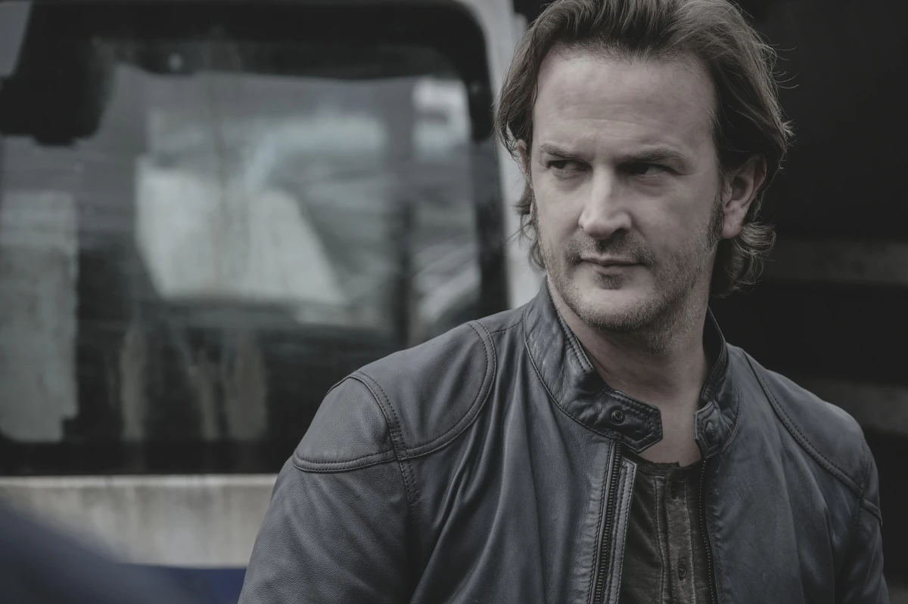
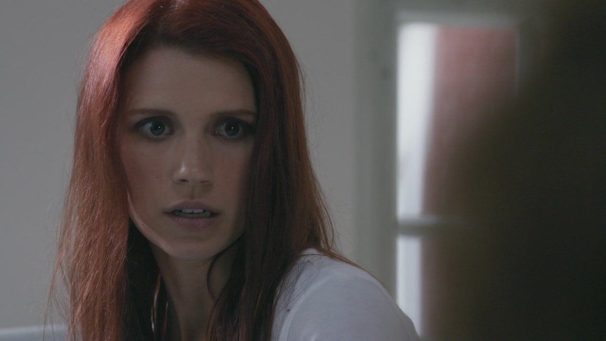
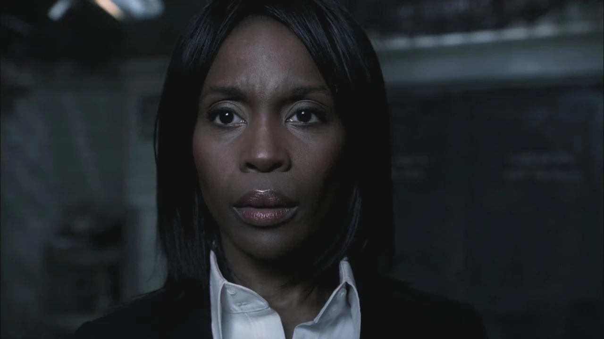

Gabriel, também conhecido como Loki (falsamente) ou O Malandro, foi o quarto e mais jovem dos quatro arcanjos criados por Deus. Apesar de ser o mais jovem dos arcanjos, ele ainda é muito poderoso. Gabriel era muito compassivo com sua família. Embora ele tenha sido o primeiro celestial a ser visto no programa, ele foi o último arcanjo a ser revelado. Segundo Gabriel, O Apocalipse era um problema que ele enfrentava diariamente. Quando seus irmãos mais velhos, Miguel e Lúcifer, se voltaram um contra o outro e começaram a lutar entre si, ele não aguentou, retirando-se para a Terra como forma de fuga. Gabriel amava seu pai e seus irmãos, mas não conseguiu escolher o lado entre Miguel e Lúcifer, então deixou o Céu e "fugiu" para a Terra. Ele resgatou e fez amizade com o deus pagão chamado Loki e logo passou para a "proteção de testemunhas" e começou a se passar pelo próprio deus nórdico trapaceiro. Gabriel descreveu sua experiência em obter um recipiente e assumir a forma de Loki como um “transplante de rosto”. Depois disso, ele ganhou fama entre outras divindades pagãs e ficou conhecido como o famoso deus nórdico Loki. Como Loki, ele matou pessoas em todo o mundo que considerava idiotas, embora tenha poupado algumas para espalhar a palavra, e eventualmente encontrou Sam e Dean, que frustraram seus planos em mais de uma ocasião e descobriram sua verdadeira identidade. Uma vez que Gabriel foi exposto, ele finalmente ajudou Sam e Dean a parar o Apocalipse, contando-lhes o segredo da porta da Jaula, mas ao longo do caminho foi "morto" por Lúcifer. Após a queda dos anjos, Metatron criou uma ilusão de Gabriel em um esforço para enganar Castiel. O falso Gabriel alegou que estava escondido, mas desapareceu assim que Castiel percebeu o truque. Desde então, tanto Lúcifer quanto Deus declararam, em momentos separados, que acreditavam que Gabriel estava morto. Anos depois, foi revelado que Gabriel ainda estava vivo por Asmodeus, que o mantinha prisioneiro e roubava sua graça para ganhar mais poder. Gabriel foi então resgatado por Arthur Ketch, que o entregou a Sam e Dean no bunker dos Homens de Letras. Foi revelado que Gabriel mais uma vez conseguiu fingir sua morte, mas acabou sendo capturado e torturado por Asmodeus durante anos. Depois de recuperar e matar Asmodeus, Gabriel foi informado dos acontecimentos e optou por retornar mais uma vez a uma vida longe de humanos, anjos e demônios. Gabriel então rastreou as Deidades que o venderam para Asmodeus para obter sua vingança. Ele foi rastreado pelos Winchesters que decidiram ajudá-lo em seus esforços, pois ele ainda estava com pouca energia. Depois de matar Loki e se vingar, Gabriel se sentiu vazio e decidiu ajudar os irmãos a derrotar Michael para salvar o mundo. Gabriel os ajudou revelando-se a seu irmão Lúcifer, que ele capturou e trouxe para os Winchesters para fortalecer a fenda. Ele então viajou para Apocalypse World com eles para resgatar seu sobrinho Jack e Mary Winchester. No caminho de volta para a fenda, o grupo foi confrontado por Michael. Decidindo parar de correr como fez no passado, ele escolheu enfrentar Michael, mas acabou sendo derrotado e morto por ele.
Anna Milton era um anjo caído que se tornou a filha humana de Richard e Amy Milton ao remover sua graça. Devido à sua capacidade recentemente despertada de ouvir anjos falando, ela foi perseguida tanto por demônios quanto por anjos. Sam e Dean a protegeram até que ela conseguiu recuperar sua graça e se defender de seus perseguidores, tornando-se amantes de Dean por um breve período. Devido à traição de Castiel, a Hoste do Céu eventualmente capturou Anna e a levou de volta ao Céu. Ela retornou à Terra em The Song Remains the Same com a intenção de evitar que o Apocalipse ocorresse matando John e Mary Winchester para apagar retroativamente Sam e Dean Winchester da existência. Ela foi morta por Michael para proteger os Winchesters.
Rafael foi o terceiro dos quatro arcanjos criados por Deus. Ele era mais velho que Gabriel, mas mais jovem que Miguel e Lúcifer. Após a rebelião e banimento de Lúcifer, Rafael apoiou Miguel na conquista do Universo. Na 4ª temporada, Raphael protegeu Chuck dos danos de Lilith e então tentou impedir Dean e Castiel de impedir Sam de quebrar o último selo e matou Castiel. Na 5ª temporada, ele se tornou alvo de Castiel, que havia sido ressuscitado, e de Dean para encontrar Deus, mas ele não tinha respostas e eles o deixaram em um anel de fogo sagrado enquanto ele jurava matar o anjo. Na 6ª temporada, Raphael escapou e retornou ao Céu com a intenção de assumir e reiniciar o Apocalipse, mas foi combatido por Castiel e uma guerra civil começou, forçando Castiel a se unir a Crowley para obter as almas do Purgatório. Quando Castiel o traiu, Raphael aliou-se a Crowley para obter o poder para si, apenas para ser morto pelo anjo quando assumiu o poder.
